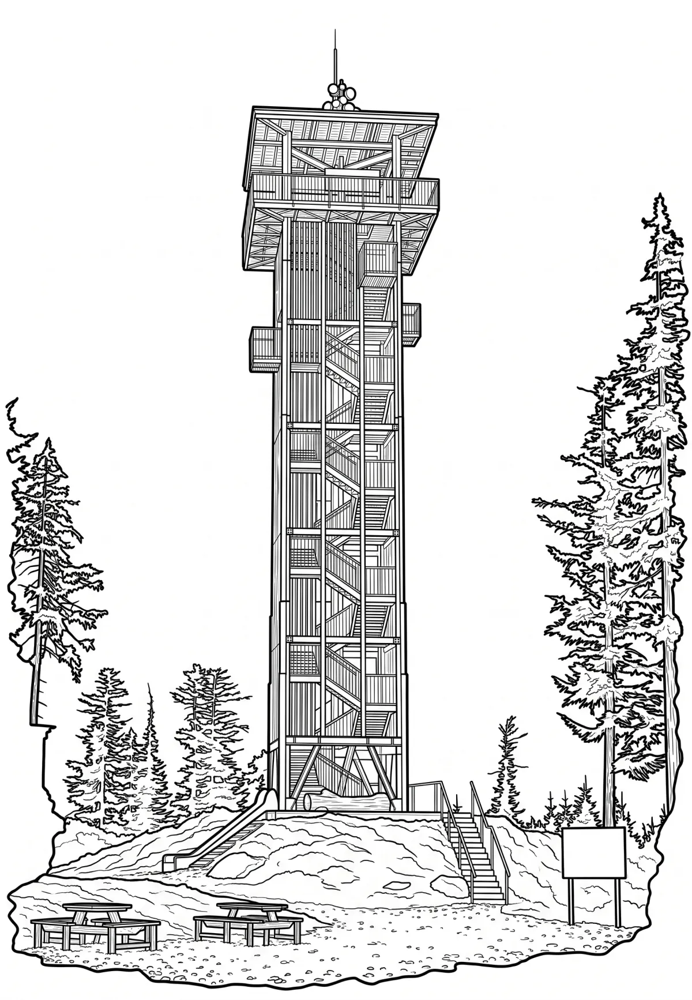

Rozhledna Špičák
Plzeňský kraj · 1202 m n. m.

technická památka · #066
Špičák, často označovaný jako Tanvaldský Špičák (německy Tannwalder Spitzberg), je výrazný vrch nacházející se mezi městy Tanvald a Albrechtice v pohoří Jizerské hory. Jeho nadmořská výška činí 812 metrů a převyšuje tak severní část tanvaldské kotliny o markantních 320 metrů.